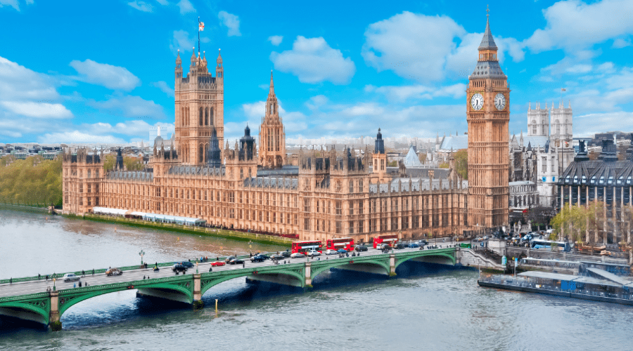
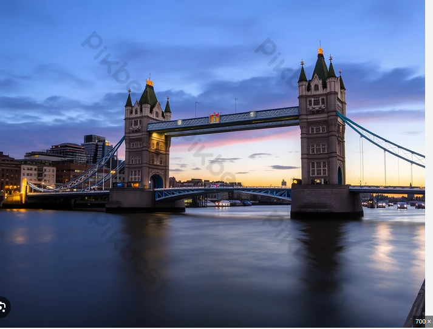

Добре дошли в Лондон!
Лондон - градът на културата, историята и кралските традиции, ви очаква с безкрайни възможности за открития.
Националният химн на Обединеното кралство
Слушайте официалния национален химн на Обединеното кралство.
История на Лондон
Въпреки че са известни следи от неолита и бронзовата епоха, датиращи от 1500 г. пр. н. е. и селищен слой от древните британци, се приема, че Лондон е основан от римляните преди около 2000 години. Основан е под името Лондиниум след нахлуването на Римската империя във Великобритания през 43 г. пр.н.е. Въпреки че няма окончателна информация за произхода на името, се смята, че значението му може да е "течаща река". Според Geofrey of Monmouth името всъщност се основава на келтския бог Ludd. Според легендата, градът, който преди се е наричал "Trinovantum", е преименуван на "Caer Ludd".
Лондон е един от най-старите градове в света. По отношение на туризма историческите артефакти се излагат в големи музеи. Тяхната култура всъщност започва да се разпространява по целия свят преди хиляда години. Посетители идват в Лондон от цял свят. Това е резултат от това, че Лондон има дълбоко вкоренена история.
Забележителности
-

Посетете Биг Бен и Уестминстърския дворец
-

Разгледайте емблематичния Тауър Бридж
-

Открийте съкровищата на Британския музей
Култура и кухня
Насладете се на разнообразната култура на Лондон и опитайте традиционни ястия като "fish and chips" и английски чай.
- Поздравителен етикет: Поздравите в Лондон обикновено са учтиви и сдържани. Когато се срещате с някого за първи път, здравото ръкостискане и приятелската усмивка са обичайни. Обичайно е да казвате „Здрасти“ или „Радвам се да се запознаем“. Прегръдка или целувка по бузата (обикновено само една) може да се случи между приятели, но най-добре е първо да изчакате и да видите какво прави другият.
- Внимавайте с опашката: Да чакаш на опашка е голяма работа в Лондон. Когато чакате автобуса, в супермаркета или купувате билети, винаги се нареждайте на опашка и чакайте своя ред. Скачането от опашката се счита за много грубо поведение. Лондончани приемат реденето на опашка много сериозно, така че спазвайте тази традиция, за да избегнете мръщенето или неодобрителни погледи.
- Бъдете точни: Точността е много важна в Лондон. Ако имате среща, среща или курс по английски в Лондон, опитайте се да пристигнете навреме или няколко минути по-рано. Закъснението може да се разглежда като неуважение или непрофесионализъм. Ако закъснявате, моля, бъдете любезни да уведомите този човек, за да можем да се срещнем с вас възможно най-скоро.
- Добротата има значение: Лондончаните обикновено са учтиви и очакват същото от другите. Важно е често да използвате думите „моля“, „благодаря“, „извинете“ и „съжалявам“. Тези малки думи могат да направят много добро впечатление. Например, ако случайно се сблъскате с някого, едно бързо „Извинете!“ Ще бъде оценено.
Галерия
-

Тауърът на Лондон - символ на историята
-

Разходка из красивия Хайд Парк
Лондон Видео
Лондон от птичи поглед